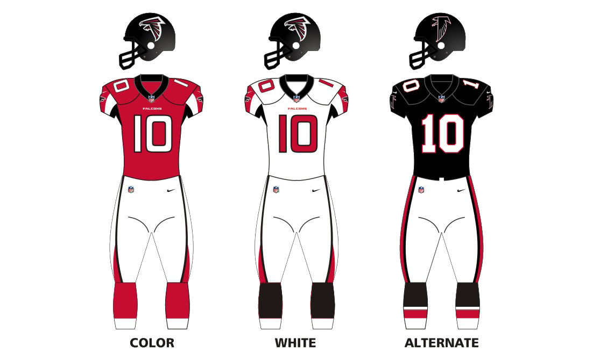
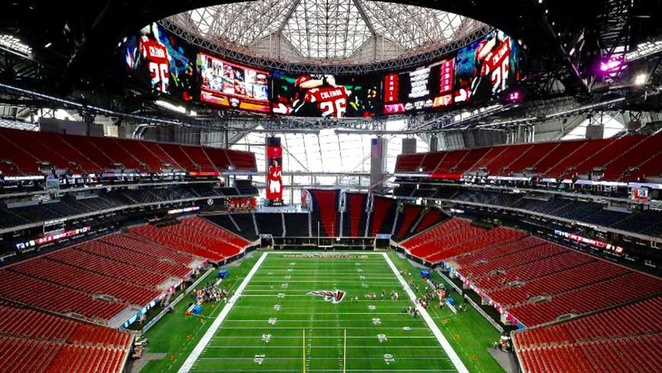

The Atlanta Falcons are a professional American Football team based out of Atlanta, GA. The Falcons compete as a team in the National Football League (NFL) as a member of the league's National Football Conference (NFC) South Division. The Falcons joined the NFL in 1965 as an expansion team and have since compiled a record of 350-450-6. The Falcons have appeared in two Super Bowls, the first time being in 1998 in Super Bowl XXXIII (33) in which they lost to the Denver Broncos 34-19. The second and most recent Super Bowl appearance was in 2016 in Super Bowl LI (51) in which they were defeated by the New England Patriots 34-28 in overtime.The Falcons Current home field is Mercedes-Benz Stadium located in downtown Atlanta. However, their practice facility is located in Flowery Branch, GA. The Falcons official colors are Red, Black, and Silver. Their home uniform consists of red jerseys with white pants, while their away uniforms include white jerseys with white pants as well as an alternate uniform with black jerseys and white pants.

Being a part of the NFC South Division, the Falcons naturally have bitter rivalries with the following teams in the NFC South Division:
| NFL Team Name | Year Founded | Overall Record to Date | 2017 Season Record | Super Bowl Victories |
|---|---|---|---|---|
| Atlanta Falcons | 1966 | 350-450-6 | 10-6 | 0 |
| Carolina Panthers | 1995 | 175-176-1 | 11-5 | 0 |
| New Orleans Saints | 1967 | 343-438-5 | 11-5 | 1 (2010) |
| Tampa Bay Buccaneers | 1976 | 255-404-1 | 5-11 | 1 (2003) |
There are also numerous notable and NFL Hall of Fame players that once played for the Falcons. Some notable players include Deion Sanders, Brett Favre, and Michael Vick. Some famous current players include quarterback Matt Ryan, receiver Julio Jones, running backs Devonta Freeman and Tevon Coleman, and finally veteran kicker Matt Bryant.
There are many well known former and current players, but my personal favorites include:
The Falcons recently built the new Mercedes-Benz Stadium for the 2018 season after moving out of their previous stadium, The Georgia Dome.

For more information, you may visit The Falcons Wikipedia Page